Update the student
Sample video reasoning responses and optimize the student on the task reward. Save its policy snapshots before and after the update stage.
- Before reward
- θr−
- After reward
- θr+
Training-Based Recursive Self-Improvement in VideoLLM
The student’s progress becomes the next teacher. RECAST turns changes from reward learning into guidance for the next training round.
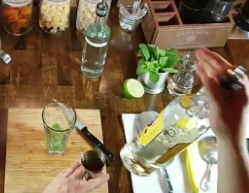
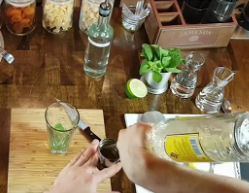
Video reasoning involves actions, their order, and the objects involved. RECAST uses answer, temporal, and spatial evidence during training to turn task rewards into guidance for individual reasoning steps.
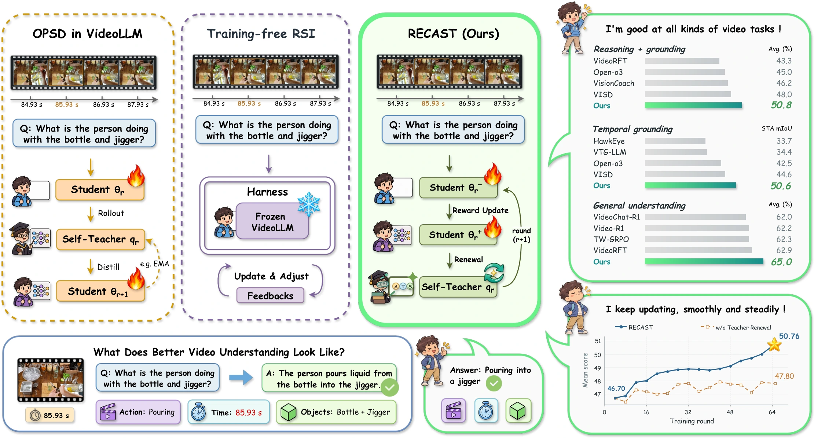
Each round starts with a student, observes how reward learning changes its policy, and uses that change to renew the teacher. The guided student then starts the next round.
Sample video reasoning responses and optimize the student on the task reward. Save its policy snapshots before and after the update stage.
Compare the two snapshots under answer, temporal, and spatial evidence. Use the reward-induced policy change to build the self-teacher for this round.
FASC changes how much credit each token receives. ODR scores alternative next tokens through sampled continuations. The updated student enters the next reward stage.
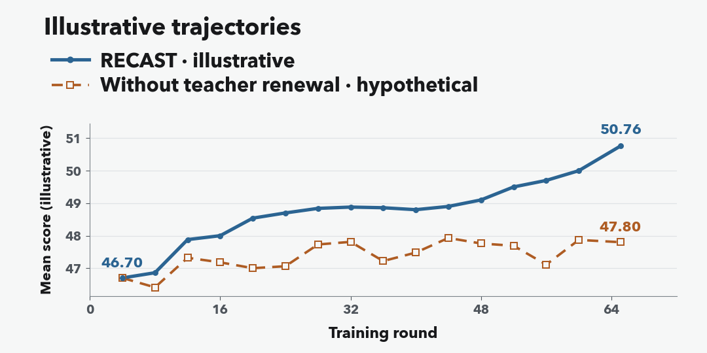
The blue line illustrates RECAST’s trajectory across training rounds. The dashed orange line uses hypothetical scores for the comparison without teacher renewal.
Recursive Evolution through Chunk-Aware Student Training brings teacher renewal, semantic chunk credit, and reward-based decision refinement into the same training loop.
The renewed teacher scores student-generated reasoning using answer, temporal, and spatial evidence.
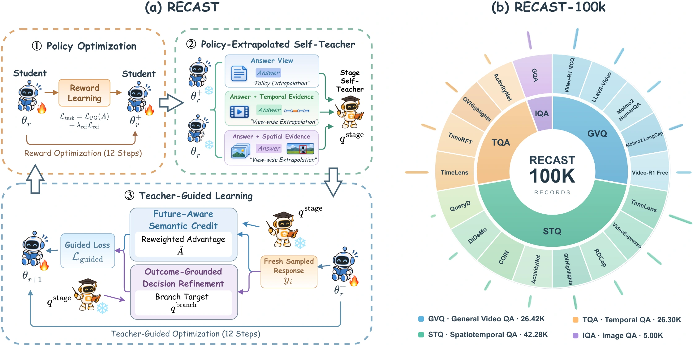
Future-Aware Semantic Credit uses evidence from the current and later reasoning chunks to reweight token advantages.
Outcome-Grounded Decision Refinement samples continuations from alternative next tokens and scores them with the task reward.
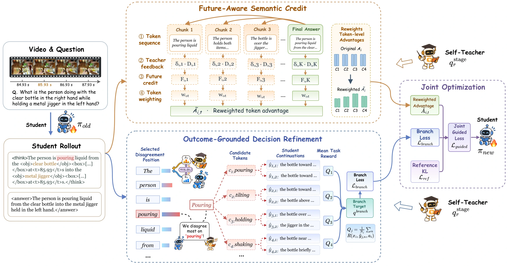
RECAST-100K extends STGR-RL with video QA, spatiotemporal grounding, and temporal localization examples. These comparisons summarize findings across nine benchmarks.
| Evaluation | RECAST-7B | Comparison |
|---|---|---|
| Video reasoning and groundingFour-benchmark average | 50.8 | 48.0VISD-7B |
| Charades-STATemporal grounding mIoU | 50.6 | 44.6VISD-7B |
| General video understandingFour-benchmark average accuracy | 65.0 | 62.9VideoRFT-7B |
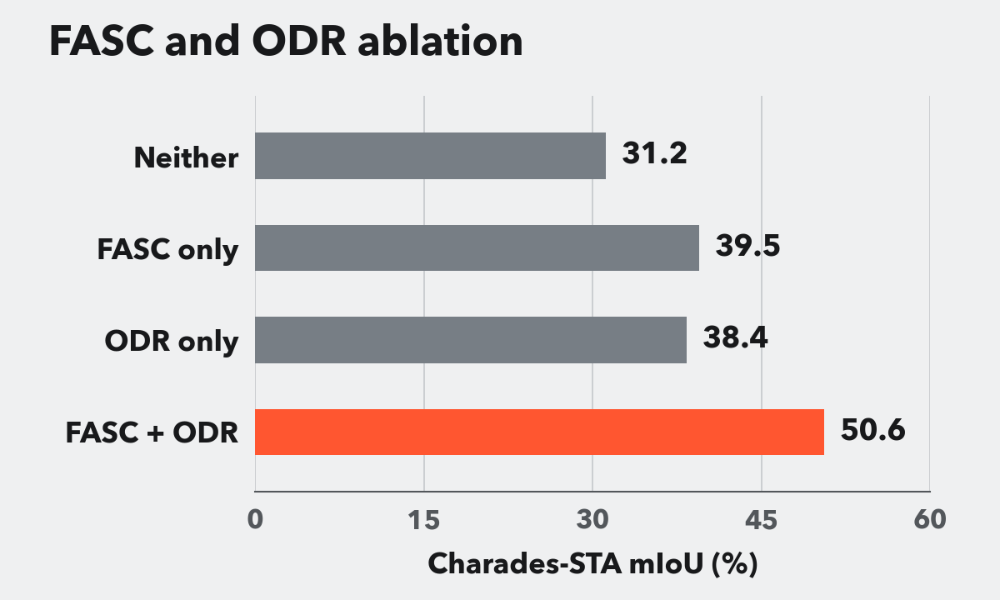
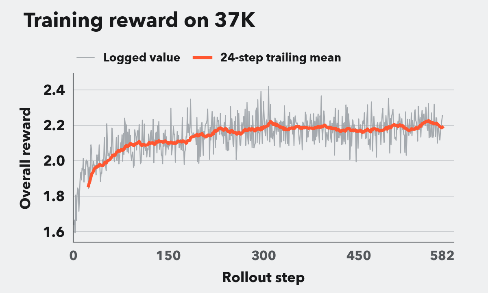
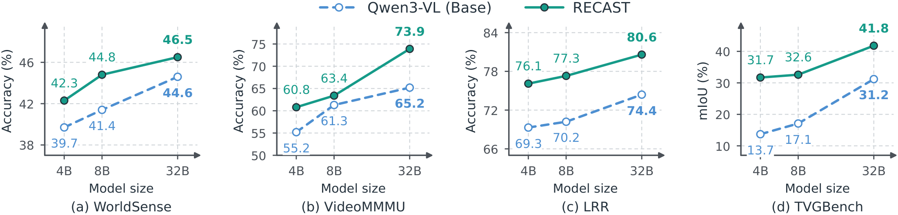
vLLM 0.11.0 generates rollouts and ODR continuations. PyTorch FSDP handles training updates, and Ray coordinates workers.
See how the model localizes separate actions in one clip and reasons about the order of actions in another.
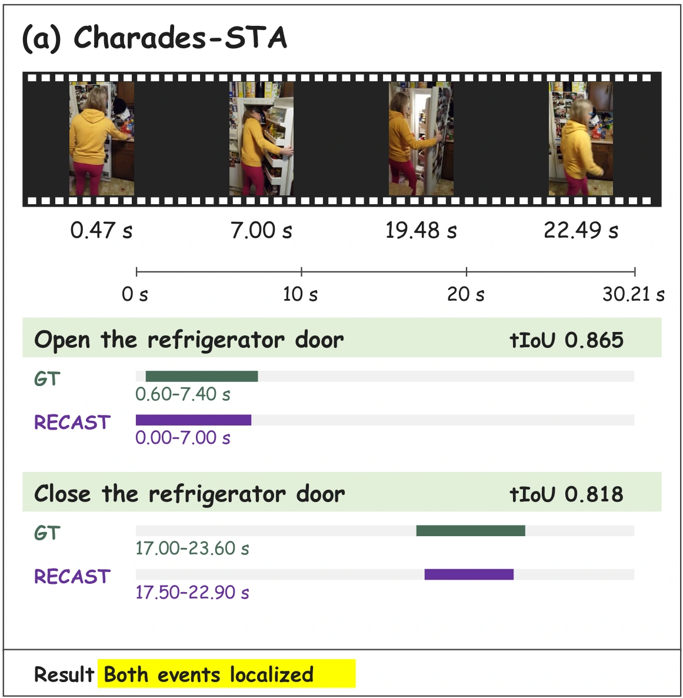
On Charades-STA, RECAST localizes both opening and closing a refrigerator door in a 30.21-second video.
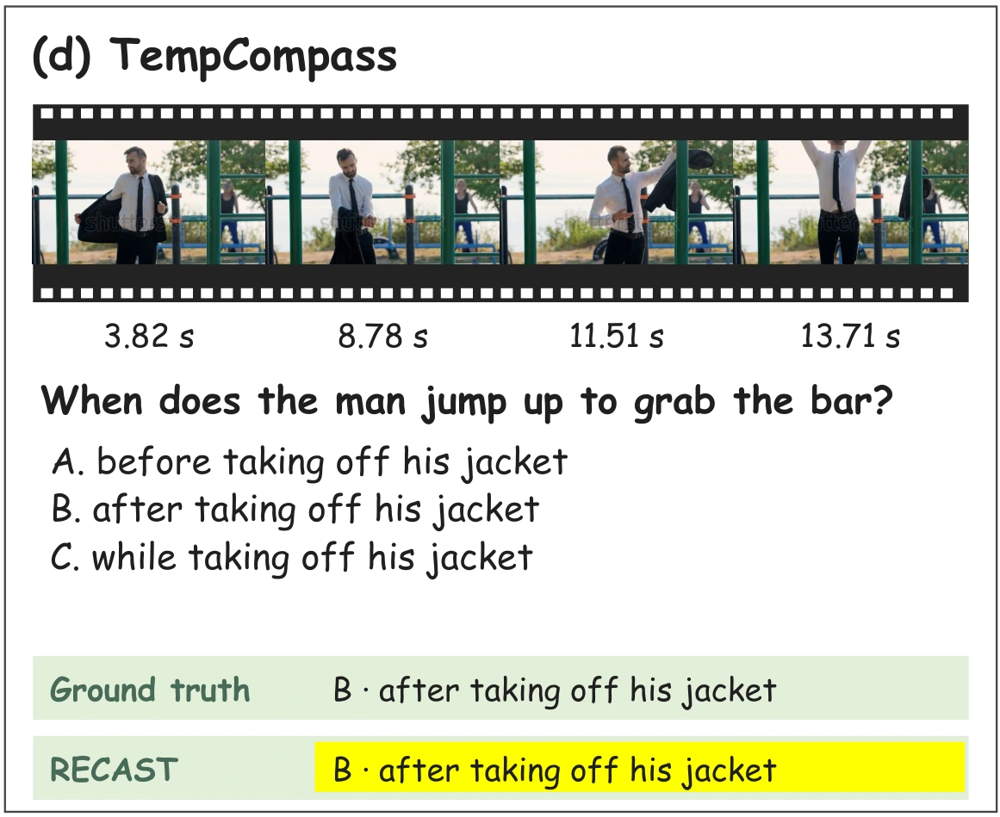
TempCompass asks when the man jumps to grab the bar. RECAST’s answer matches the reference.
After taking off his jacket.